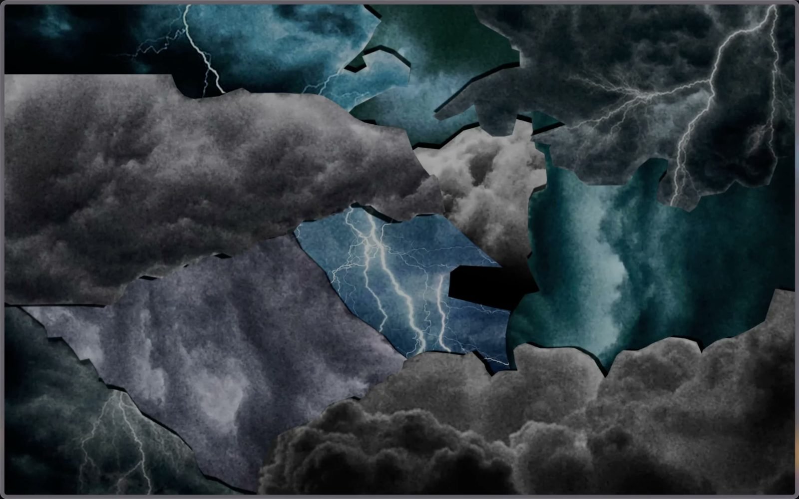

Digital Designer
A collaborative project with investigative magazine “The Seventh Eye”, exploring political protest and violence in Israel through interactive data visualization.
Website design and development for NEIGHPalm, an AI-powered security and compliance platform
A landing page for a week-long festival inspired by the Jewish creation story, designed as a student project.

A practice companion app for drummers that builds discipline through structured routines, progress tracking and gamification, designed as a student project.
A series of animated data visualisations exploring Mesopotamian gods: their origins, duration of worship, roles in society, and physical forms.